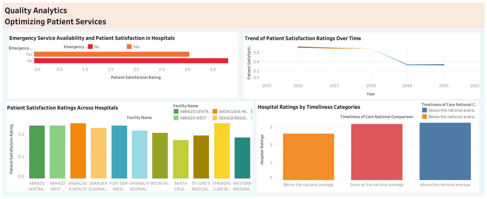
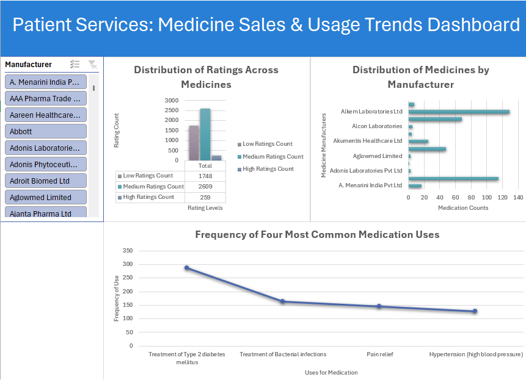
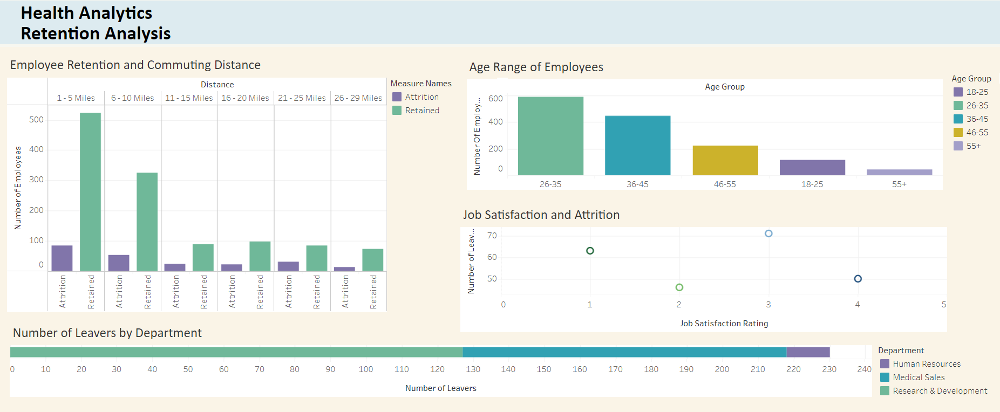

About
Jenan Meri
Hello, and welcome to my portfolio! As a Data Analyst, I bring a wealth of
experience in ensuring the seamless operation of enterprise applications.
My passion lies in optimizing system utilization and providing user-centric
solutions that drive organizational success. With a keen eye for detail,
I excel at troubleshooting application errors and collaborating with
cross-functional teams to deliver impactful outcomes. Proficient in various
software applications and committed to continuous learning, I am dedicated to
delivering high-quality results and making a tangible impact in the IT industry.

In my Optimizing Patient Services dashboard, I utilized Excel, SQL, and Tableau to provide
comprehensive insights
across different hospital patient services. Through meticulous data cleaning in Excel and
in-depth analysis using
SQL queries, I was able to uncover valuable trends and patterns within the patient services
data. Through Tableau
visualizations, I was able to offer intuitive and interactive dashboards, enabling stakeholders
to explore data and
make informed decisions. With my commitment to excellence and expertise in data analytics, my
dashboard empowers
these hospitals to optimize operations, enhance efficiency, and ultimately improve patient
outcomes.

In my Excel Patient Services Medicine Sales and Usage Trends project, I conducted specific
analyses using pivot tables to examine the distribution of high, medium, and low ratings across
medications, as well as the frequency of the four most common medication uses. Additionally, I
investigated the number of medicines produced by each manufacturer.
Employing Excel's powerful features such as pivot tables, VLOOKUP, and various functions, I
cleaned, transformed, and analyzed the data to ensure accuracy and reliability. Through
meticulous data preparation and analysis, I uncovered key trends and correlations.
I then utilized Excel's visualization capabilities to create intuitive dashboards that represent
sales and usage trends visually, aiding stakeholders in making informed decisions.
This project highlights my proficiency in Excel and my ability to derive actionable insights
from complex datasets, ultimately contributing to improving patient services in the
pharmaceutical industry.

In this SQL project, I delve into a Healthcare company's HR department data to
quantify statistics related to employee attrition. My goal was to
understand the reasons behind employees leaving and explore potential
strategies for retention. I used SQL to query the data and
extract relevant information such as attrition rates based on factors like
distance from home, age groups, and job satisfaction. The insights that I gained
from this analysis can provide valuable input for making informed decisions
and implementing measures to prevent employee turnover.

In my Tableau portfolio, I demonstrate my ability to transform
datasets into valuable insights. As
data becomes increasingly abundant, I believe the real challenge lies
in understanding, processing, and extracting meaningful value from it. I
believe in the power of turning raw data into comprehensible visualizations
that not only communicate information effectively but also provide actionable
insights. Using Tableau, I navigate through data sets, uncovering trends,
patterns, and key metrics. In a world where data is everywhere,
my focus is on leveraging Tableau to not only visualize information but also
to communicate it in a way that adds significant value to decision-making processes.

In my GitHub portfolio, I showcase expertise in SQL and Python, emphasizing the vital
skill of turning raw data into actionable insights. Through SQL queries, I
navigate complex datasets, extracting valuable information from databases.
My projects range from quantifying Healthcare statistics to analyzing attrition rates.
My projects prioritize clear and accessible SQL code, reflecting my
commitment to effective communication of data-driven insights. I invite you to my
GitHub repository for concise examples of how I leverage SQL to transform
data into valuable knowledge.